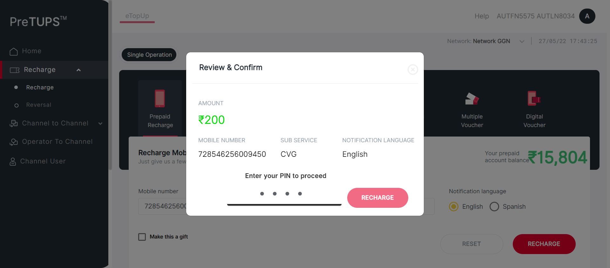
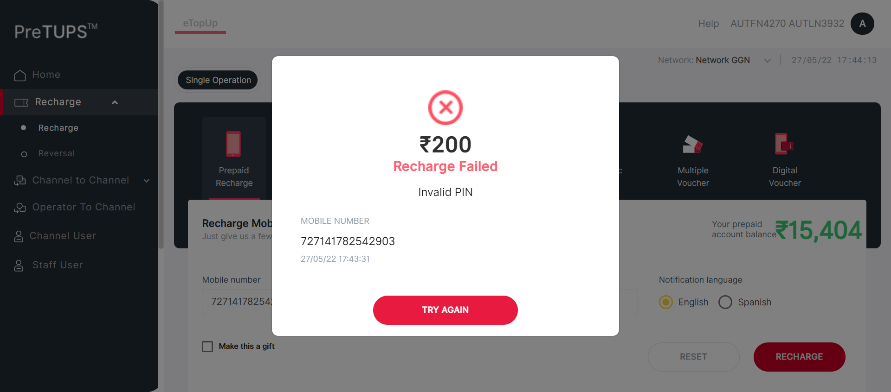
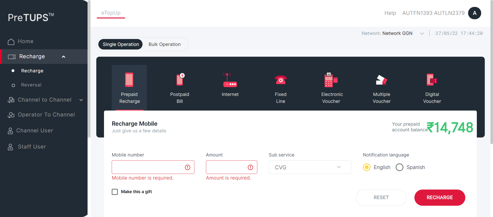
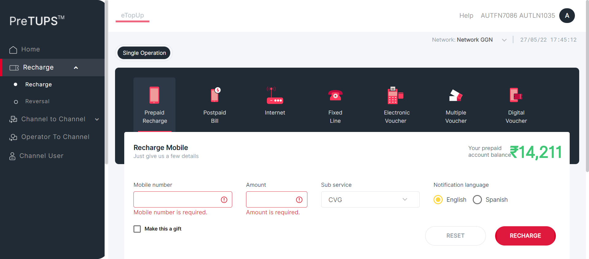

Tests
0 test(s) passed
2 test(s) failed, 7 others
Steps
7 step(s) passed
4 step(s) failed, 391 others
Tests
-
[Pre-Requisite]C2S Recharge Revamp May 27, 2022 05:36:50 PM failMay 27, 2022 05:36:50 PM May 27, 2022 05:45:58 PM 0h 9m 7s+921ms
-
To verify that Super Distributor category user is able to perform C2S Recharge.May 27, 2022 05:36:50 PM 0h 1m 57s+849ms errorPre-Requisite
Status Timestamp Details info_outline 5:36:51 PM Category Code for Super Distributor: DIST info_outline 5:36:51 PM Entered webInterface(Super Distributor) info_outline 5:36:51 PM webInterface() :: select query: Select WEB_INTERFACE_ALLOWED from categories where category_name= ? info_outline 5:36:51 PM Database Returns: WEB_INTERFACE_ALLOWED (Y) info_outline 5:36:51 PM Exited webInterface() info_outline 5:36:51 PM Entered performC2STransfer(Root, Super Distributor, 1357, RC) info_outline 5:36:51 PM LoginID found as: AUT_48675 info_outline 5:36:51 PM Password found as: com@2468 info_outline 5:36:51 PM Username found as: AUTFN1393 AUTLN2379 info_outline 5:36:52 PM Trying to select Language info_outline 5:36:52 PM Language selected successfully as: English info_outline 5:36:52 PM Trying to enter Login ID info_outline 5:36:53 PM Login ID entered successfully as: AUT_48675 info_outline 5:36:53 PM Trying to enter Password info_outline 5:36:53 PM Password entered successfully as: com@2468 info_outline 5:36:53 PM Trying to click Login Button info_outline 5:36:53 PM Login button clicked successfully info_outline 5:36:53 PM Error Message Found on Login Screen: info_outline 5:36:56 PM User clicked Recharged Heading Link. info_outline 5:36:58 PM User clicked Prepaid Recharged Link. info_outline 5:36:58 PM Service name is =Customer Recharge info_outline 5:36:58 PM GenerateMSISDN class Returns: Remaining MSISDNLength (13) info_outline 5:36:58 PM The generated MSISDN is :: 729866331027013 info_outline 5:36:59 PM User entered Subscriber MSISDN: 729866331027013 info_outline 5:36:59 PM Current Balance of user: 14948.0 info_outline 5:36:59 PM Current Balance of user: 14948.0 info_outline 5:36:59 PM Current Balance of user: 14948.0 info_outline 5:36:59 PM Current Balance of user: 14948.0 info_outline 5:36:59 PM Current Balance of user: 14948.0 info_outline 5:36:59 PM Current Balance of user: 14948.0 info_outline 5:36:59 PM Current Balance of user: 14948.0 info_outline 5:36:59 PM Current Balance of user: 14948.0 info_outline 5:36:59 PM Current Balance of user: 14948.0 info_outline 5:36:59 PM Current Balance of user: 14948.0 info_outline 5:36:59 PM Entered Amount: 200 info_outline 5:36:59 PM Trying to select Sub Service info_outline 5:36:59 PM SubService selected successfully as: CVG info_outline 5:37:00 PM User clicked Recharge button info_outline 5:37:00 PM User will enter Channel User Pin info_outline 5:37:01 PM User entered Channel User Pin info_outline 5:37:01 PM User clicked Recharge button info_outline 5:37:01 PM getTransactionStatusByKey() :: select query: select value from key_values where type = ? and key = ? info_outline 5:37:03 PM Trying to get transfer ID. info_outline 5:37:03 PM Transfer ID fetched as : R220527.1730.100001 info_outline 5:37:03 PM Entered :: fetchTransferStatus() info_outline 5:37:03 PM Trying to get transfer Status. info_outline 5:37:03 PM Transfer status fetched as : Recharge Successful info_outline 5:37:03 PM Transaction Status Found as: Recharge Successful with TXN ID: R220527.1730.100001, hence Transaction Successful info_outline 5:37:03 PM Trying to get logs path. error 5:37:24 PM Error while getting SSH Server Instance : com.jcraft.jsch.JSchException: java.net.ConnectException: Connection timed out: connect info_outline 5:37:24 PM Path for ChannelRequestDailyLog: null info_outline 5:37:24 PM Path for OneLineTXNLogC2S: null error 5:37:45 PM Error while getting SSH Server Instance : com.jcraft.jsch.JSchException: java.net.ConnectException: Connection timed out: connect info_outline 5:37:45 PM ChannelRequestDailyLogs: null
info_outline 5:37:45 PM Trying to get logs path. error 5:38:06 PM Error while getting SSH Server Instance : com.jcraft.jsch.JSchException: java.net.ConnectException: Connection timed out: connect info_outline 5:38:06 PM Path for ChannelRequestDailyLog: null info_outline 5:38:06 PM Path for OneLineTXNLogC2S: null error 5:38:27 PM Error while getting SSH Server Instance : com.jcraft.jsch.JSchException: java.net.ConnectException: Connection timed out: connect info_outline 5:38:27 PM OneLineTXNLogsC2S: null
error 5:38:48 PM Error while getting SSH Server Instance : com.jcraft.jsch.JSchException: java.net.ConnectException: Connection timed out: connect check_circle 5:38:48 PM Catalina Log
info_outline 5:38:48 PM User clicked Done Recharge button info_outline 5:38:48 PM Exited performC2STransfer() -
To verify that Dealer category user is able to perform C2S Recharge.May 27, 2022 05:38:49 PM 0h 1m 54s+70ms errorPre-Requisite
Status Timestamp Details info_outline 5:38:49 PM Category Code for Dealer: SE info_outline 5:38:49 PM Entered webInterface(Dealer) info_outline 5:38:49 PM webInterface() :: select query: Select WEB_INTERFACE_ALLOWED from categories where category_name= ? info_outline 5:38:50 PM Database Returns: WEB_INTERFACE_ALLOWED (Y) info_outline 5:38:50 PM Exited webInterface() info_outline 5:38:50 PM Entered performC2STransfer(Super Distributor, Dealer, 2468, RC) info_outline 5:38:50 PM LoginID found as: AUT_19995 info_outline 5:38:50 PM Password found as: com@2468 info_outline 5:38:50 PM Username found as: AUTFN6751 AUTLN4189 info_outline 5:38:50 PM Trying to select Language info_outline 5:38:50 PM Language selected successfully as: English info_outline 5:38:50 PM Trying to enter Login ID info_outline 5:38:51 PM Login ID entered successfully as: AUT_19995 info_outline 5:38:51 PM Trying to enter Password info_outline 5:38:51 PM Password entered successfully as: com@2468 info_outline 5:38:51 PM Trying to click Login Button info_outline 5:38:51 PM Login button clicked successfully info_outline 5:38:51 PM Error Message Found on Login Screen: info_outline 5:38:53 PM User clicked Recharged Heading Link. info_outline 5:38:54 PM User clicked Prepaid Recharged Link. info_outline 5:38:54 PM Service name is =Customer Recharge info_outline 5:38:54 PM GenerateMSISDN class Returns: Remaining MSISDNLength (13) info_outline 5:38:54 PM The generated MSISDN is :: 723997867436959 info_outline 5:38:54 PM User entered Subscriber MSISDN: 723997867436959 info_outline 5:38:54 PM Current Balance of user: 7401.0 info_outline 5:38:54 PM Current Balance of user: 7401.0 info_outline 5:38:54 PM Current Balance of user: 7401.0 info_outline 5:38:54 PM Current Balance of user: 7401.0 info_outline 5:38:54 PM Current Balance of user: 7401.0 info_outline 5:38:54 PM Current Balance of user: 7401.0 info_outline 5:38:54 PM Current Balance of user: 7401.0 info_outline 5:38:54 PM Current Balance of user: 7401.0 info_outline 5:38:54 PM Current Balance of user: 7401.0 info_outline 5:38:54 PM Current Balance of user: 7401.0 info_outline 5:38:54 PM Entered Amount: 200 info_outline 5:38:54 PM Trying to select Sub Service info_outline 5:38:54 PM SubService selected successfully as: CVG info_outline 5:38:55 PM User clicked Recharge button info_outline 5:38:55 PM User will enter Channel User Pin info_outline 5:38:56 PM User entered Channel User Pin info_outline 5:38:56 PM User clicked Recharge button info_outline 5:38:56 PM getTransactionStatusByKey() :: select query: select value from key_values where type = ? and key = ? info_outline 5:38:58 PM Trying to get transfer ID. info_outline 5:38:58 PM Transfer ID fetched as : R220527.1732.100001 info_outline 5:38:58 PM Entered :: fetchTransferStatus() info_outline 5:38:58 PM Trying to get transfer Status. info_outline 5:38:58 PM Transfer status fetched as : Recharge Successful info_outline 5:38:58 PM Transaction Status Found as: Recharge Successful with TXN ID: R220527.1732.100001, hence Transaction Successful info_outline 5:38:58 PM Trying to get logs path. error 5:39:19 PM Error while getting SSH Server Instance : com.jcraft.jsch.JSchException: java.net.ConnectException: Connection timed out: connect info_outline 5:39:19 PM Path for ChannelRequestDailyLog: null info_outline 5:39:19 PM Path for OneLineTXNLogC2S: null error 5:39:40 PM Error while getting SSH Server Instance : com.jcraft.jsch.JSchException: java.net.ConnectException: Connection timed out: connect info_outline 5:39:40 PM ChannelRequestDailyLogs: null
info_outline 5:39:40 PM Trying to get logs path. error 5:40:01 PM Error while getting SSH Server Instance : com.jcraft.jsch.JSchException: java.net.ConnectException: Connection timed out: connect info_outline 5:40:01 PM Path for ChannelRequestDailyLog: null info_outline 5:40:01 PM Path for OneLineTXNLogC2S: null error 5:40:22 PM Error while getting SSH Server Instance : com.jcraft.jsch.JSchException: java.net.ConnectException: Connection timed out: connect info_outline 5:40:22 PM OneLineTXNLogsC2S: null
error 5:40:43 PM Error while getting SSH Server Instance : com.jcraft.jsch.JSchException: java.net.ConnectException: Connection timed out: connect check_circle 5:40:43 PM Catalina Log
info_outline 5:40:43 PM User clicked Done Recharge button info_outline 5:40:43 PM Exited performC2STransfer() -
To verify that Agent category user is able to perform C2S Recharge.May 27, 2022 05:40:43 PM 0h 1m 53s+233ms errorPre-Requisite
Status Timestamp Details info_outline 5:40:44 PM Category Code for Agent: AG info_outline 5:40:44 PM Entered webInterface(Agent) info_outline 5:40:44 PM webInterface() :: select query: Select WEB_INTERFACE_ALLOWED from categories where category_name= ? info_outline 5:40:44 PM Database Returns: WEB_INTERFACE_ALLOWED (Y) info_outline 5:40:44 PM Exited webInterface() info_outline 5:40:44 PM Entered performC2STransfer(Super Distributor, Agent, 1357, RC) info_outline 5:40:44 PM LoginID found as: AUT_08837 info_outline 5:40:44 PM Password found as: com@2468 info_outline 5:40:44 PM Username found as: AUTFN7086 AUTLN1035 info_outline 5:40:44 PM Trying to select Language info_outline 5:40:45 PM Language selected successfully as: English info_outline 5:40:45 PM Trying to enter Login ID info_outline 5:40:45 PM Login ID entered successfully as: AUT_08837 info_outline 5:40:45 PM Trying to enter Password info_outline 5:40:45 PM Password entered successfully as: com@2468 info_outline 5:40:45 PM Trying to click Login Button info_outline 5:40:45 PM Login button clicked successfully info_outline 5:40:45 PM Error Message Found on Login Screen: info_outline 5:40:47 PM User clicked Recharged Heading Link. info_outline 5:40:48 PM User clicked Prepaid Recharged Link. info_outline 5:40:48 PM Service name is =Customer Recharge info_outline 5:40:48 PM GenerateMSISDN class Returns: Remaining MSISDNLength (13) info_outline 5:40:48 PM The generated MSISDN is :: 721718549613050 info_outline 5:40:48 PM User entered Subscriber MSISDN: 721718549613050 info_outline 5:40:48 PM Current Balance of user: 14411.0 info_outline 5:40:48 PM Current Balance of user: 14411.0 info_outline 5:40:48 PM Current Balance of user: 14411.0 info_outline 5:40:48 PM Current Balance of user: 14411.0 info_outline 5:40:48 PM Current Balance of user: 14411.0 info_outline 5:40:48 PM Current Balance of user: 14411.0 info_outline 5:40:48 PM Current Balance of user: 14411.0 info_outline 5:40:48 PM Current Balance of user: 14411.0 info_outline 5:40:48 PM Current Balance of user: 14411.0 info_outline 5:40:48 PM Current Balance of user: 14411.0 info_outline 5:40:48 PM Entered Amount: 200 info_outline 5:40:48 PM Trying to select Sub Service info_outline 5:40:48 PM SubService selected successfully as: CVG info_outline 5:40:48 PM User clicked Recharge button info_outline 5:40:48 PM User will enter Channel User Pin info_outline 5:40:50 PM User entered Channel User Pin info_outline 5:40:50 PM User clicked Recharge button info_outline 5:40:50 PM getTransactionStatusByKey() :: select query: select value from key_values where type = ? and key = ? info_outline 5:40:51 PM Trying to get transfer ID. info_outline 5:40:51 PM Transfer ID fetched as : R220527.1734.100001 info_outline 5:40:51 PM Entered :: fetchTransferStatus() info_outline 5:40:51 PM Trying to get transfer Status. info_outline 5:40:51 PM Transfer status fetched as : Recharge Successful info_outline 5:40:51 PM Transaction Status Found as: Recharge Successful with TXN ID: R220527.1734.100001, hence Transaction Successful info_outline 5:40:51 PM Trying to get logs path. error 5:41:12 PM Error while getting SSH Server Instance : com.jcraft.jsch.JSchException: java.net.ConnectException: Connection timed out: connect info_outline 5:41:12 PM Path for ChannelRequestDailyLog: null info_outline 5:41:12 PM Path for OneLineTXNLogC2S: null error 5:41:33 PM Error while getting SSH Server Instance : com.jcraft.jsch.JSchException: java.net.ConnectException: Connection timed out: connect info_outline 5:41:33 PM ChannelRequestDailyLogs: null
info_outline 5:41:33 PM Trying to get logs path. error 5:41:54 PM Error while getting SSH Server Instance : com.jcraft.jsch.JSchException: java.net.ConnectException: Connection timed out: connect info_outline 5:41:54 PM Path for ChannelRequestDailyLog: null info_outline 5:41:54 PM Path for OneLineTXNLogC2S: null error 5:42:15 PM Error while getting SSH Server Instance : com.jcraft.jsch.JSchException: java.net.ConnectException: Connection timed out: connect info_outline 5:42:15 PM OneLineTXNLogsC2S: null
error 5:42:37 PM Error while getting SSH Server Instance : com.jcraft.jsch.JSchException: java.net.ConnectException: Connection timed out: connect check_circle 5:42:37 PM Catalina Log
info_outline 5:42:37 PM User clicked Done Recharge button info_outline 5:42:37 PM Exited performC2STransfer() -
To verify that Agent category user is able to perform C2S Recharge.May 27, 2022 05:42:37 PM 0h 0m 47s+529ms failPre-Requisite
Status Timestamp Details info_outline 5:42:37 PM Category Code for Agent: AG info_outline 5:42:37 PM Entered webInterface(Agent) info_outline 5:42:37 PM webInterface() :: select query: Select WEB_INTERFACE_ALLOWED from categories where category_name= ? info_outline 5:42:37 PM Database Returns: WEB_INTERFACE_ALLOWED (Y) info_outline 5:42:37 PM Exited webInterface() info_outline 5:42:37 PM Entered performC2STransfer(Dealer, Agent, 1357, RC) info_outline 5:42:37 PM LoginID found as: AUT_87570 info_outline 5:42:37 PM Password found as: com@2468 info_outline 5:42:37 PM Username found as: AUTFN5575 AUTLN8034 info_outline 5:42:38 PM Trying to select Language info_outline 5:42:38 PM Language selected successfully as: English info_outline 5:42:38 PM Trying to enter Login ID info_outline 5:42:38 PM Login ID entered successfully as: AUT_87570 info_outline 5:42:38 PM Trying to enter Password info_outline 5:42:38 PM Password entered successfully as: com@2468 info_outline 5:42:38 PM Trying to click Login Button info_outline 5:42:39 PM Login button clicked successfully info_outline 5:42:39 PM Error Message Found on Login Screen: info_outline 5:42:40 PM User clicked Recharged Heading Link. info_outline 5:42:41 PM User clicked Prepaid Recharged Link. info_outline 5:42:41 PM Service name is =Customer Recharge info_outline 5:42:41 PM GenerateMSISDN class Returns: Remaining MSISDNLength (13) info_outline 5:42:41 PM The generated MSISDN is :: 728546256009450 info_outline 5:42:41 PM User entered Subscriber MSISDN: 728546256009450 info_outline 5:42:41 PM Current Balance of user: 15804.0 info_outline 5:42:41 PM Current Balance of user: 15804.0 info_outline 5:42:41 PM Current Balance of user: 15804.0 info_outline 5:42:41 PM Current Balance of user: 15804.0 info_outline 5:42:41 PM Current Balance of user: 15804.0 info_outline 5:42:41 PM Current Balance of user: 15804.0 info_outline 5:42:41 PM Current Balance of user: 15804.0 info_outline 5:42:41 PM Current Balance of user: 15804.0 info_outline 5:42:41 PM Current Balance of user: 15804.0 info_outline 5:42:41 PM Current Balance of user: 15804.0 info_outline 5:42:41 PM Entered Amount: 200 info_outline 5:42:41 PM Trying to select Sub Service info_outline 5:42:42 PM SubService selected successfully as: CVG info_outline 5:42:42 PM User clicked Recharge button info_outline 5:42:42 PM User will enter Channel User Pin info_outline 5:42:43 PM User entered Channel User Pin info_outline 5:42:43 PM User clicked Recharge button info_outline 5:42:43 PM getTransactionStatusByKey() :: select query: select value from key_values where type = ? and key = ? cancel 5:43:03 PM org.openqa.selenium.TimeoutException: Expected condition failed: waiting for visibility of Proxy element for: DefaultElementLocator 'By.xpath: //div[@class='recharge-successful']' (tried for 20 second(s) with 500 milliseconds interval) at org.openqa.selenium.support.ui.WebDriverWait.timeoutException(WebDriverWait.java:82) at org.openqa.selenium.support.ui.FluentWait.until(FluentWait.java:272) at angular.pageobjects.recharge.Recharges.successPopUPVisibility(Recharges.java:688) at angular.feature.C2STransferRevamp.performC2STransfer(C2STransferRevamp.java:159) at angular.testscripts.prereuisitesangular.PreRequisite_C2STransfer_Revamp.A_01_Test_C2SRecharge(PreRequisite_C2STransfer_Revamp.java:45) at sun.reflect.NativeMethodAccessorImpl.invoke0(Native Method) at sun.reflect.NativeMethodAccessorImpl.invoke(Unknown Source) at sun.reflect.DelegatingMethodAccessorImpl.invoke(Unknown Source) at java.lang.reflect.Method.invoke(Unknown Source) at org.testng.internal.MethodInvocationHelper.invokeMethod(MethodInvocationHelper.java:124) at org.testng.internal.Invoker.invokeMethod(Invoker.java:580) at org.testng.internal.Invoker.invokeTestMethod(Invoker.java:716) at org.testng.internal.Invoker.invokeTestMethods(Invoker.java:988) at org.testng.internal.TestMethodWorker.invokeTestMethods(TestMethodWorker.java:125) at org.testng.internal.TestMethodWorker.run(TestMethodWorker.java:109) at org.testng.TestRunner.privateRun(TestRunner.java:648) at org.testng.TestRunner.run(TestRunner.java:505) at org.testng.SuiteRunner.runTest(SuiteRunner.java:455) at org.testng.SuiteRunner.runSequentially(SuiteRunner.java:450) at org.testng.SuiteRunner.privateRun(SuiteRunner.java:415) at org.testng.SuiteRunner.run(SuiteRunner.java:364) at org.testng.SuiteRunnerWorker.runSuite(SuiteRunnerWorker.java:52) at org.testng.SuiteRunnerWorker.run(SuiteRunnerWorker.java:84) at org.testng.TestNG.runSuitesSequentially(TestNG.java:1208) at org.testng.TestNG.runSuitesLocally(TestNG.java:1137) at org.testng.TestNG.runSuites(TestNG.java:1049) at org.testng.TestNG.run(TestNG.java:1017) at org.testng.remote.AbstractRemoteTestNG.run(AbstractRemoteTestNG.java:115) at org.testng.remote.RemoteTestNG.initAndRun(RemoteTestNG.java:251) at org.testng.remote.RemoteTestNG.main(RemoteTestNG.java:77) Caused by: org.openqa.selenium.NoSuchElementException: no such element: Unable to locate element: {"method":"xpath","selector":"//div[@class='recharge-successful']"} (Session info: chrome=101.0.4951.67) For documentation on this error, please visit: http://seleniumhq.org/exceptions/no_such_element.html Build info: version: '3.10.0', revision: '176b4a9', time: '2018-03-02T19:03:16.397Z' System info: host: 'MCKL-20005142', ip: '192.168.1.38', os.name: 'Windows 10', os.arch: 'amd64', os.version: '10.0', java.version: '1.8.0_291' Driver info: org.openqa.selenium.chrome.ChromeDriver Capabilities {acceptInsecureCerts: false, browserName: chrome, browserVersion: 101.0.4951.67, chrome: {chromedriverVersion: 101.0.4951.41 (93c720db8323..., userDataDir: C:\Users\SOURAB~1.AWA\AppDa...}, goog:chromeOptions: {debuggerAddress: localhost:62140}, javascriptEnabled: true, networkConnectionEnabled: false, pageLoadStrategy: normal, platform: WINDOWS, platformName: WINDOWS, proxy: Proxy(), setWindowRect: true, strictFileInteractability: false, timeouts: {implicit: 0, pageLoad: 300000, script: 30000}, unhandledPromptBehavior: dismiss and notify, webauthn:extension:credBlob: true, webauthn:extension:largeBlob: true, webauthn:virtualAuthenticators: true} Session ID: ae404202d79e8dedc5274343b1e37989 *** Element info: {Using=xpath, value=//div[@class='recharge-successful']} at sun.reflect.GeneratedConstructorAccessor77.newInstance(Unknown Source) at sun.reflect.DelegatingConstructorAccessorImpl.newInstance(Unknown Source) at java.lang.reflect.Constructor.newInstance(Unknown Source) at org.openqa.selenium.remote.http.W3CHttpResponseCodec.createException(W3CHttpResponseCodec.java:187) at org.openqa.selenium.remote.http.W3CHttpResponseCodec.decode(W3CHttpResponseCodec.java:122) at org.openqa.selenium.remote.http.W3CHttpResponseCodec.decode(W3CHttpResponseCodec.java:49) at org.openqa.selenium.remote.HttpCommandExecutor.execute(HttpCommandExecutor.java:160) at org.openqa.selenium.remote.service.DriverCommandExecutor.execute(DriverCommandExecutor.java:83) at org.openqa.selenium.remote.RemoteWebDriver.execute(RemoteWebDriver.java:601) at org.openqa.selenium.remote.RemoteWebDriver.findElement(RemoteWebDriver.java:371) at org.openqa.selenium.remote.RemoteWebDriver.findElementByXPath(RemoteWebDriver.java:473) at org.openqa.selenium.By$ByXPath.findElement(By.java:361) at org.openqa.selenium.remote.RemoteWebDriver.findElement(RemoteWebDriver.java:363) at org.openqa.selenium.support.pagefactory.DefaultElementLocator.findElement(DefaultElementLocator.java:69) at org.openqa.selenium.support.pagefactory.internal.LocatingElementHandler.invoke(LocatingElementHandler.java:38) at com.sun.proxy.$Proxy19.isDisplayed(Unknown Source) at org.openqa.selenium.support.ui.ExpectedConditions.elementIfVisible(ExpectedConditions.java:315) at org.openqa.selenium.support.ui.ExpectedConditions.access$100(ExpectedConditions.java:44) at org.openqa.selenium.support.ui.ExpectedConditions$10.apply(ExpectedConditions.java:301) at org.openqa.selenium.support.ui.ExpectedConditions$10.apply(ExpectedConditions.java:298) at org.openqa.selenium.support.ui.FluentWait.until(FluentWait.java:249) ... 28 moreerror 5:43:24 PM Error while getting SSH Server Instance : com.jcraft.jsch.JSchException: java.net.ConnectException: Connection timed out: connect cancel 5:43:24 PM Catalina Log
- 
-
To verify that Retailer category user is able to perform C2S Recharge.May 27, 2022 05:43:25 PM 0h 0m 47s+634ms failPre-Requisite
Status Timestamp Details info_outline 5:43:25 PM Category Code for Retailer: RET info_outline 5:43:25 PM Entered webInterface(Retailer) info_outline 5:43:25 PM webInterface() :: select query: Select WEB_INTERFACE_ALLOWED from categories where category_name= ? info_outline 5:43:25 PM Database Returns: WEB_INTERFACE_ALLOWED (Y) info_outline 5:43:25 PM Exited webInterface() info_outline 5:43:25 PM Entered performC2STransfer(Agent, Retailer, 2468, RC) info_outline 5:43:25 PM LoginID found as: AUT_41726 info_outline 5:43:25 PM Password found as: com@2468 info_outline 5:43:25 PM Username found as: AUTFN4270 AUTLN3932 info_outline 5:43:26 PM Trying to select Language info_outline 5:43:26 PM Language selected successfully as: English info_outline 5:43:26 PM Trying to enter Login ID info_outline 5:43:26 PM Login ID entered successfully as: AUT_41726 info_outline 5:43:26 PM Trying to enter Password info_outline 5:43:27 PM Password entered successfully as: com@2468 info_outline 5:43:27 PM Trying to click Login Button info_outline 5:43:27 PM Login button clicked successfully info_outline 5:43:27 PM Error Message Found on Login Screen: info_outline 5:43:28 PM User clicked Recharged Heading Link. info_outline 5:43:29 PM User clicked Prepaid Recharged Link. info_outline 5:43:29 PM Service name is =Customer Recharge info_outline 5:43:29 PM GenerateMSISDN class Returns: Remaining MSISDNLength (13) info_outline 5:43:29 PM The generated MSISDN is :: 727141782542903 info_outline 5:43:29 PM User entered Subscriber MSISDN: 727141782542903 info_outline 5:43:29 PM Current Balance of user: 15404.0 info_outline 5:43:29 PM Current Balance of user: 15404.0 info_outline 5:43:29 PM Current Balance of user: 15404.0 info_outline 5:43:29 PM Current Balance of user: 15404.0 info_outline 5:43:29 PM Current Balance of user: 15404.0 info_outline 5:43:29 PM Current Balance of user: 15404.0 info_outline 5:43:29 PM Current Balance of user: 15404.0 info_outline 5:43:30 PM Current Balance of user: 15404.0 info_outline 5:43:30 PM Current Balance of user: 15404.0 info_outline 5:43:30 PM Current Balance of user: 15404.0 info_outline 5:43:30 PM Entered Amount: 200 info_outline 5:43:30 PM Trying to select Sub Service info_outline 5:43:30 PM SubService selected successfully as: CVG info_outline 5:43:30 PM User clicked Recharge button info_outline 5:43:30 PM User will enter Channel User Pin info_outline 5:43:31 PM User entered Channel User Pin info_outline 5:43:31 PM User clicked Recharge button info_outline 5:43:31 PM getTransactionStatusByKey() :: select query: select value from key_values where type = ? and key = ? cancel 5:43:52 PM org.openqa.selenium.TimeoutException: Expected condition failed: waiting for visibility of Proxy element for: DefaultElementLocator 'By.xpath: //div[@class='recharge-successful']' (tried for 20 second(s) with 500 milliseconds interval) at org.openqa.selenium.support.ui.WebDriverWait.timeoutException(WebDriverWait.java:82) at org.openqa.selenium.support.ui.FluentWait.until(FluentWait.java:272) at angular.pageobjects.recharge.Recharges.successPopUPVisibility(Recharges.java:688) at angular.feature.C2STransferRevamp.performC2STransfer(C2STransferRevamp.java:159) at angular.testscripts.prereuisitesangular.PreRequisite_C2STransfer_Revamp.A_01_Test_C2SRecharge(PreRequisite_C2STransfer_Revamp.java:45) at sun.reflect.NativeMethodAccessorImpl.invoke0(Native Method) at sun.reflect.NativeMethodAccessorImpl.invoke(Unknown Source) at sun.reflect.DelegatingMethodAccessorImpl.invoke(Unknown Source) at java.lang.reflect.Method.invoke(Unknown Source) at org.testng.internal.MethodInvocationHelper.invokeMethod(MethodInvocationHelper.java:124) at org.testng.internal.Invoker.invokeMethod(Invoker.java:580) at org.testng.internal.Invoker.invokeTestMethod(Invoker.java:716) at org.testng.internal.Invoker.invokeTestMethods(Invoker.java:988) at org.testng.internal.TestMethodWorker.invokeTestMethods(TestMethodWorker.java:125) at org.testng.internal.TestMethodWorker.run(TestMethodWorker.java:109) at org.testng.TestRunner.privateRun(TestRunner.java:648) at org.testng.TestRunner.run(TestRunner.java:505) at org.testng.SuiteRunner.runTest(SuiteRunner.java:455) at org.testng.SuiteRunner.runSequentially(SuiteRunner.java:450) at org.testng.SuiteRunner.privateRun(SuiteRunner.java:415) at org.testng.SuiteRunner.run(SuiteRunner.java:364) at org.testng.SuiteRunnerWorker.runSuite(SuiteRunnerWorker.java:52) at org.testng.SuiteRunnerWorker.run(SuiteRunnerWorker.java:84) at org.testng.TestNG.runSuitesSequentially(TestNG.java:1208) at org.testng.TestNG.runSuitesLocally(TestNG.java:1137) at org.testng.TestNG.runSuites(TestNG.java:1049) at org.testng.TestNG.run(TestNG.java:1017) at org.testng.remote.AbstractRemoteTestNG.run(AbstractRemoteTestNG.java:115) at org.testng.remote.RemoteTestNG.initAndRun(RemoteTestNG.java:251) at org.testng.remote.RemoteTestNG.main(RemoteTestNG.java:77) Caused by: org.openqa.selenium.NoSuchElementException: no such element: Unable to locate element: {"method":"xpath","selector":"//div[@class='recharge-successful']"} (Session info: chrome=101.0.4951.67) For documentation on this error, please visit: http://seleniumhq.org/exceptions/no_such_element.html Build info: version: '3.10.0', revision: '176b4a9', time: '2018-03-02T19:03:16.397Z' System info: host: 'MCKL-20005142', ip: '192.168.1.38', os.name: 'Windows 10', os.arch: 'amd64', os.version: '10.0', java.version: '1.8.0_291' Driver info: org.openqa.selenium.chrome.ChromeDriver Capabilities {acceptInsecureCerts: false, browserName: chrome, browserVersion: 101.0.4951.67, chrome: {chromedriverVersion: 101.0.4951.41 (93c720db8323..., userDataDir: C:\Users\SOURAB~1.AWA\AppDa...}, goog:chromeOptions: {debuggerAddress: localhost:62140}, javascriptEnabled: true, networkConnectionEnabled: false, pageLoadStrategy: normal, platform: WINDOWS, platformName: WINDOWS, proxy: Proxy(), setWindowRect: true, strictFileInteractability: false, timeouts: {implicit: 0, pageLoad: 300000, script: 30000}, unhandledPromptBehavior: dismiss and notify, webauthn:extension:credBlob: true, webauthn:extension:largeBlob: true, webauthn:virtualAuthenticators: true} Session ID: ae404202d79e8dedc5274343b1e37989 *** Element info: {Using=xpath, value=//div[@class='recharge-successful']} at sun.reflect.GeneratedConstructorAccessor77.newInstance(Unknown Source) at sun.reflect.DelegatingConstructorAccessorImpl.newInstance(Unknown Source) at java.lang.reflect.Constructor.newInstance(Unknown Source) at org.openqa.selenium.remote.http.W3CHttpResponseCodec.createException(W3CHttpResponseCodec.java:187) at org.openqa.selenium.remote.http.W3CHttpResponseCodec.decode(W3CHttpResponseCodec.java:122) at org.openqa.selenium.remote.http.W3CHttpResponseCodec.decode(W3CHttpResponseCodec.java:49) at org.openqa.selenium.remote.HttpCommandExecutor.execute(HttpCommandExecutor.java:160) at org.openqa.selenium.remote.service.DriverCommandExecutor.execute(DriverCommandExecutor.java:83) at org.openqa.selenium.remote.RemoteWebDriver.execute(RemoteWebDriver.java:601) at org.openqa.selenium.remote.RemoteWebDriver.findElement(RemoteWebDriver.java:371) at org.openqa.selenium.remote.RemoteWebDriver.findElementByXPath(RemoteWebDriver.java:473) at org.openqa.selenium.By$ByXPath.findElement(By.java:361) at org.openqa.selenium.remote.RemoteWebDriver.findElement(RemoteWebDriver.java:363) at org.openqa.selenium.support.pagefactory.DefaultElementLocator.findElement(DefaultElementLocator.java:69) at org.openqa.selenium.support.pagefactory.internal.LocatingElementHandler.invoke(LocatingElementHandler.java:38) at com.sun.proxy.$Proxy19.isDisplayed(Unknown Source) at org.openqa.selenium.support.ui.ExpectedConditions.elementIfVisible(ExpectedConditions.java:315) at org.openqa.selenium.support.ui.ExpectedConditions.access$100(ExpectedConditions.java:44) at org.openqa.selenium.support.ui.ExpectedConditions$10.apply(ExpectedConditions.java:301) at org.openqa.selenium.support.ui.ExpectedConditions$10.apply(ExpectedConditions.java:298) at org.openqa.selenium.support.ui.FluentWait.until(FluentWait.java:249) ... 28 moreerror 5:44:13 PM Error while getting SSH Server Instance : com.jcraft.jsch.JSchException: java.net.ConnectException: Connection timed out: connect cancel 5:44:13 PM Catalina Log
- 
-
To verify that Super Distributor is not able to perform Customer Recharge through WEB if subscriber Amount is blank.May 27, 2022 05:44:15 PM 0h 0m 26s+124ms errorPre-Requisite
Status Timestamp Details info_outline 5:44:15 PM Category Code for Super Distributor: DIST info_outline 5:44:15 PM Entered webInterface(Super Distributor) info_outline 5:44:15 PM webInterface() :: select query: Select WEB_INTERFACE_ALLOWED from categories where category_name= ? info_outline 5:44:15 PM Database Returns: WEB_INTERFACE_ALLOWED (Y) info_outline 5:44:15 PM Exited webInterface() info_outline 5:44:15 PM Entered performC2STransferBlankAmount(Root, Super Distributor, 1357, RC) info_outline 5:44:15 PM LoginID found as: AUT_48675 info_outline 5:44:15 PM Password found as: com@2468 info_outline 5:44:15 PM Username found as: AUTFN1393 AUTLN2379 info_outline 5:44:16 PM Trying to select Language info_outline 5:44:16 PM Language selected successfully as: English info_outline 5:44:16 PM Trying to enter Login ID info_outline 5:44:16 PM Login ID entered successfully as: AUT_48675 info_outline 5:44:16 PM Trying to enter Password info_outline 5:44:16 PM Password entered successfully as: com@2468 info_outline 5:44:16 PM Trying to click Login Button info_outline 5:44:17 PM Login button clicked successfully info_outline 5:44:17 PM Error Message Found on Login Screen: info_outline 5:44:19 PM User clicked Recharged Heading Link. info_outline 5:44:19 PM User clicked Prepaid Recharged Link. info_outline 5:44:19 PM Service name is =Customer Recharge info_outline 5:44:19 PM Entered Amount: info_outline 5:44:19 PM User clicked Recharge button info_outline 5:44:19 PM Trying to get Error Validation messaged from GUI info_outline 5:44:20 PM Expected: Amount is required.
Found: Amount is required.info_outline 5:44:20 PM Message Validation Success info_outline 5:44:20 PM  error 5:44:41 PM Error while getting SSH Server Instance : com.jcraft.jsch.JSchException: java.net.ConnectException: Connection timed out: connect check_circle 5:44:41 PM Catalina Log
info_outline 5:44:41 PM Exited performC2STransferBlankAmount() -
To verify that Dealer is not able to perform Customer Recharge through WEB if subscriber Amount is blank.May 27, 2022 05:44:41 PM 0h 0m 25s+982ms errorPre-Requisite
Status Timestamp Details info_outline 5:44:41 PM Category Code for Dealer: SE info_outline 5:44:41 PM Entered webInterface(Dealer) info_outline 5:44:41 PM webInterface() :: select query: Select WEB_INTERFACE_ALLOWED from categories where category_name= ? info_outline 5:44:41 PM Database Returns: WEB_INTERFACE_ALLOWED (Y) info_outline 5:44:41 PM Exited webInterface() info_outline 5:44:41 PM Entered performC2STransferBlankAmount(Super Distributor, Dealer, 2468, RC) info_outline 5:44:42 PM LoginID found as: AUT_19995 info_outline 5:44:42 PM Password found as: com@2468 info_outline 5:44:42 PM Username found as: AUTFN6751 AUTLN4189 info_outline 5:44:42 PM Trying to select Language info_outline 5:44:42 PM Language selected successfully as: English info_outline 5:44:42 PM Trying to enter Login ID info_outline 5:44:43 PM Login ID entered successfully as: AUT_19995 info_outline 5:44:43 PM Trying to enter Password info_outline 5:44:43 PM Password entered successfully as: com@2468 info_outline 5:44:43 PM Trying to click Login Button info_outline 5:44:43 PM Login button clicked successfully info_outline 5:44:43 PM Error Message Found on Login Screen: info_outline 5:44:44 PM User clicked Recharged Heading Link. info_outline 5:44:45 PM User clicked Prepaid Recharged Link. info_outline 5:44:45 PM Service name is =Customer Recharge info_outline 5:44:45 PM Entered Amount: info_outline 5:44:45 PM User clicked Recharge button info_outline 5:44:45 PM Trying to get Error Validation messaged from GUI info_outline 5:44:46 PM Expected: Amount is required.
Found: Amount is required.info_outline 5:44:46 PM Message Validation Success info_outline 5:44:46 PM error 5:45:07 PM Error while getting SSH Server Instance : com.jcraft.jsch.JSchException: java.net.ConnectException: Connection timed out: connect check_circle 5:45:07 PM Catalina Log
info_outline 5:45:07 PM Exited performC2STransferBlankAmount() -
To verify that Agent is not able to perform Customer Recharge through WEB if subscriber Amount is blank.May 27, 2022 05:45:07 PM 0h 0m 25s+783ms errorPre-Requisite
Status Timestamp Details info_outline 5:45:07 PM Category Code for Agent: AG info_outline 5:45:07 PM Entered webInterface(Agent) info_outline 5:45:07 PM webInterface() :: select query: Select WEB_INTERFACE_ALLOWED from categories where category_name= ? info_outline 5:45:07 PM Database Returns: WEB_INTERFACE_ALLOWED (Y) info_outline 5:45:07 PM Exited webInterface() info_outline 5:45:07 PM Entered performC2STransferBlankAmount(Super Distributor, Agent, 1357, RC) info_outline 5:45:07 PM LoginID found as: AUT_08837 info_outline 5:45:07 PM Password found as: com@2468 info_outline 5:45:07 PM Username found as: AUTFN7086 AUTLN1035 info_outline 5:45:08 PM Trying to select Language info_outline 5:45:08 PM Language selected successfully as: English info_outline 5:45:08 PM Trying to enter Login ID info_outline 5:45:09 PM Login ID entered successfully as: AUT_08837 info_outline 5:45:09 PM Trying to enter Password info_outline 5:45:09 PM Password entered successfully as: com@2468 info_outline 5:45:09 PM Trying to click Login Button info_outline 5:45:09 PM Login button clicked successfully info_outline 5:45:09 PM Error Message Found on Login Screen: info_outline 5:45:10 PM User clicked Recharged Heading Link. info_outline 5:45:11 PM User clicked Prepaid Recharged Link. info_outline 5:45:11 PM Service name is =Customer Recharge info_outline 5:45:11 PM Entered Amount: info_outline 5:45:11 PM User clicked Recharge button info_outline 5:45:11 PM Trying to get Error Validation messaged from GUI info_outline 5:45:12 PM Expected: Amount is required.
Found: Amount is required.info_outline 5:45:12 PM Message Validation Success info_outline 5:45:12 PM  error 5:45:33 PM Error while getting SSH Server Instance : com.jcraft.jsch.JSchException: java.net.ConnectException: Connection timed out: connect check_circle 5:45:33 PM Catalina Log
info_outline 5:45:33 PM Exited performC2STransferBlankAmount() -
To verify that Agent is not able to perform Customer Recharge through WEB if subscriber Amount is blank.May 27, 2022 05:45:33 PM 0h 0m 25s+334ms errorPre-Requisite
Status Timestamp Details info_outline 5:45:33 PM Category Code for Agent: AG info_outline 5:45:33 PM Entered webInterface(Agent) info_outline 5:45:33 PM webInterface() :: select query: Select WEB_INTERFACE_ALLOWED from categories where category_name= ? info_outline 5:45:33 PM Database Returns: WEB_INTERFACE_ALLOWED (Y) info_outline 5:45:33 PM Exited webInterface() info_outline 5:45:33 PM Entered performC2STransferBlankAmount(Dealer, Agent, 1357, RC) info_outline 5:45:33 PM LoginID found as: AUT_87570 info_outline 5:45:33 PM Password found as: com@2468 info_outline 5:45:33 PM Username found as: AUTFN5575 AUTLN8034 info_outline 5:45:34 PM Trying to select Language info_outline 5:45:34 PM Language selected successfully as: English info_outline 5:45:34 PM Trying to enter Login ID info_outline 5:45:34 PM Login ID entered successfully as: AUT_87570 info_outline 5:45:34 PM Trying to enter Password info_outline 5:45:34 PM Password entered successfully as: com@2468 info_outline 5:45:34 PM Trying to click Login Button info_outline 5:45:35 PM Login button clicked successfully info_outline 5:45:35 PM Error Message Found on Login Screen: info_outline 5:45:36 PM User clicked Recharged Heading Link. info_outline 5:45:37 PM User clicked Prepaid Recharged Link. info_outline 5:45:37 PM Service name is =Customer Recharge info_outline 5:45:37 PM Entered Amount: info_outline 5:45:37 PM User clicked Recharge button info_outline 5:45:37 PM Trying to get Error Validation messaged from GUI info_outline 5:45:37 PM Expected: Amount is required.
Found: Amount is required.info_outline 5:45:37 PM Message Validation Success info_outline 5:45:37 PM 
error 5:45:58 PM Error while getting SSH Server Instance : com.jcraft.jsch.JSchException: java.net.ConnectException: Connection timed out: connect check_circle 5:45:58 PM Catalina Log
info_outline 5:45:58 PM Exited performC2STransferBlankAmount()
-

info_outline
check_circle
cancel
cancel
error
warning
redo
clear
Categories
-
Pre-Requisite
2
7
Failed: 2
Others: 7
Timestamp
TestName
Status
May 27, 2022 05:36:50 PM
[Pre-Requisite]C2S Recharge Revamp.To verify that Super Distributor category user is able to perform C2S Recharge.
error
May 27, 2022 05:38:49 PM
[Pre-Requisite]C2S Recharge Revamp.To verify that Dealer category user is able to perform C2S Recharge.
error
May 27, 2022 05:40:43 PM
[Pre-Requisite]C2S Recharge Revamp.To verify that Agent category user is able to perform C2S Recharge.
error
May 27, 2022 05:42:37 PM
[Pre-Requisite]C2S Recharge Revamp.To verify that Agent category user is able to perform C2S Recharge.
fail
May 27, 2022 05:43:25 PM
[Pre-Requisite]C2S Recharge Revamp.To verify that Retailer category user is able to perform C2S Recharge.
fail
May 27, 2022 05:44:15 PM
[Pre-Requisite]C2S Recharge Revamp.To verify that Super Distributor is not able to perform Customer Recharge through WEB if subscriber Amount is blank.
error
May 27, 2022 05:44:41 PM
[Pre-Requisite]C2S Recharge Revamp.To verify that Dealer is not able to perform Customer Recharge through WEB if subscriber Amount is blank.
error
May 27, 2022 05:45:07 PM
[Pre-Requisite]C2S Recharge Revamp.To verify that Agent is not able to perform Customer Recharge through WEB if subscriber Amount is blank.
error
May 27, 2022 05:45:33 PM
[Pre-Requisite]C2S Recharge Revamp.To verify that Agent is not able to perform Customer Recharge through WEB if subscriber Amount is blank.
error
Pre-Requisite
2
7
Failed: 2
Others: 7
| Timestamp | TestName | Status |
|---|---|---|
| May 27, 2022 05:36:50 PM | [Pre-Requisite]C2S Recharge Revamp.To verify that Super Distributor category user is able to perform C2S Recharge. | error |
| May 27, 2022 05:38:49 PM | [Pre-Requisite]C2S Recharge Revamp.To verify that Dealer category user is able to perform C2S Recharge. | error |
| May 27, 2022 05:40:43 PM | [Pre-Requisite]C2S Recharge Revamp.To verify that Agent category user is able to perform C2S Recharge. | error |
| May 27, 2022 05:42:37 PM | [Pre-Requisite]C2S Recharge Revamp.To verify that Agent category user is able to perform C2S Recharge. | fail |
| May 27, 2022 05:43:25 PM | [Pre-Requisite]C2S Recharge Revamp.To verify that Retailer category user is able to perform C2S Recharge. | fail |
| May 27, 2022 05:44:15 PM | [Pre-Requisite]C2S Recharge Revamp.To verify that Super Distributor is not able to perform Customer Recharge through WEB if subscriber Amount is blank. | error |
| May 27, 2022 05:44:41 PM | [Pre-Requisite]C2S Recharge Revamp.To verify that Dealer is not able to perform Customer Recharge through WEB if subscriber Amount is blank. | error |
| May 27, 2022 05:45:07 PM | [Pre-Requisite]C2S Recharge Revamp.To verify that Agent is not able to perform Customer Recharge through WEB if subscriber Amount is blank. | error |
| May 27, 2022 05:45:33 PM | [Pre-Requisite]C2S Recharge Revamp.To verify that Agent is not able to perform Customer Recharge through WEB if subscriber Amount is blank. | error |
Exceptions
-
org.openqa.selenium.TimeoutException
2
Timestamp
TestName
Status
May 27, 2022 05:42:37 PM
[Pre-Requisite]C2S Recharge Revamp.To verify that Agent category user is able to perform C2S Recharge.
org.openqa.selenium.TimeoutException: Expected condition failed: waiting for visibility of Proxy element for: DefaultElementLocator 'By.xpath: //div[@class='recharge-successful']' (tried for 20 second(s) with 500 milliseconds interval)
at org.openqa.selenium.support.ui.WebDriverWait.timeoutException(WebDriverWait.java:82)
at org.openqa.selenium.support.ui.FluentWait.until(FluentWait.java:272)
at angular.pageobjects.recharge.Recharges.successPopUPVisibility(Recharges.java:688)
at angular.feature.C2STransferRevamp.performC2STransfer(C2STransferRevamp.java:159)
at angular.testscripts.prereuisitesangular.PreRequisite_C2STransfer_Revamp.A_01_Test_C2SRecharge(PreRequisite_C2STransfer_Revamp.java:45)
at sun.reflect.NativeMethodAccessorImpl.invoke0(Native Method)
at sun.reflect.NativeMethodAccessorImpl.invoke(Unknown Source)
at sun.reflect.DelegatingMethodAccessorImpl.invoke(Unknown Source)
at java.lang.reflect.Method.invoke(Unknown Source)
at org.testng.internal.MethodInvocationHelper.invokeMethod(MethodInvocationHelper.java:124)
at org.testng.internal.Invoker.invokeMethod(Invoker.java:580)
at org.testng.internal.Invoker.invokeTestMethod(Invoker.java:716)
at org.testng.internal.Invoker.invokeTestMethods(Invoker.java:988)
at org.testng.internal.TestMethodWorker.invokeTestMethods(TestMethodWorker.java:125)
at org.testng.internal.TestMethodWorker.run(TestMethodWorker.java:109)
at org.testng.TestRunner.privateRun(TestRunner.java:648)
at org.testng.TestRunner.run(TestRunner.java:505)
at org.testng.SuiteRunner.runTest(SuiteRunner.java:455)
at org.testng.SuiteRunner.runSequentially(SuiteRunner.java:450)
at org.testng.SuiteRunner.privateRun(SuiteRunner.java:415)
at org.testng.SuiteRunner.run(SuiteRunner.java:364)
at org.testng.SuiteRunnerWorker.runSuite(SuiteRunnerWorker.java:52)
at org.testng.SuiteRunnerWorker.run(SuiteRunnerWorker.java:84)
at org.testng.TestNG.runSuitesSequentially(TestNG.java:1208)
at org.testng.TestNG.runSuitesLocally(TestNG.java:1137)
at org.testng.TestNG.runSuites(TestNG.java:1049)
at org.testng.TestNG.run(TestNG.java:1017)
at org.testng.remote.AbstractRemoteTestNG.run(AbstractRemoteTestNG.java:115)
at org.testng.remote.RemoteTestNG.initAndRun(RemoteTestNG.java:251)
at org.testng.remote.RemoteTestNG.main(RemoteTestNG.java:77)
Caused by: org.openqa.selenium.NoSuchElementException: no such element: Unable to locate element: {"method":"xpath","selector":"//div[@class='recharge-successful']"}
(Session info: chrome=101.0.4951.67)
For documentation on this error, please visit: http://seleniumhq.org/exceptions/no_such_element.html
Build info: version: '3.10.0', revision: '176b4a9', time: '2018-03-02T19:03:16.397Z'
System info: host: 'MCKL-20005142', ip: '192.168.1.38', os.name: 'Windows 10', os.arch: 'amd64', os.version: '10.0', java.version: '1.8.0_291'
Driver info: org.openqa.selenium.chrome.ChromeDriver
Capabilities {acceptInsecureCerts: false, browserName: chrome, browserVersion: 101.0.4951.67, chrome: {chromedriverVersion: 101.0.4951.41 (93c720db8323..., userDataDir: C:\Users\SOURAB~1.AWA\AppDa...}, goog:chromeOptions: {debuggerAddress: localhost:62140}, javascriptEnabled: true, networkConnectionEnabled: false, pageLoadStrategy: normal, platform: WINDOWS, platformName: WINDOWS, proxy: Proxy(), setWindowRect: true, strictFileInteractability: false, timeouts: {implicit: 0, pageLoad: 300000, script: 30000}, unhandledPromptBehavior: dismiss and notify, webauthn:extension:credBlob: true, webauthn:extension:largeBlob: true, webauthn:virtualAuthenticators: true}
Session ID: ae404202d79e8dedc5274343b1e37989
*** Element info: {Using=xpath, value=//div[@class='recharge-successful']}
at sun.reflect.GeneratedConstructorAccessor77.newInstance(Unknown Source)
at sun.reflect.DelegatingConstructorAccessorImpl.newInstance(Unknown Source)
at java.lang.reflect.Constructor.newInstance(Unknown Source)
at org.openqa.selenium.remote.http.W3CHttpResponseCodec.createException(W3CHttpResponseCodec.java:187)
at org.openqa.selenium.remote.http.W3CHttpResponseCodec.decode(W3CHttpResponseCodec.java:122)
at org.openqa.selenium.remote.http.W3CHttpResponseCodec.decode(W3CHttpResponseCodec.java:49)
at org.openqa.selenium.remote.HttpCommandExecutor.execute(HttpCommandExecutor.java:160)
at org.openqa.selenium.remote.service.DriverCommandExecutor.execute(DriverCommandExecutor.java:83)
at org.openqa.selenium.remote.RemoteWebDriver.execute(RemoteWebDriver.java:601)
at org.openqa.selenium.remote.RemoteWebDriver.findElement(RemoteWebDriver.java:371)
at org.openqa.selenium.remote.RemoteWebDriver.findElementByXPath(RemoteWebDriver.java:473)
at org.openqa.selenium.By$ByXPath.findElement(By.java:361)
at org.openqa.selenium.remote.RemoteWebDriver.findElement(RemoteWebDriver.java:363)
at org.openqa.selenium.support.pagefactory.DefaultElementLocator.findElement(DefaultElementLocator.java:69)
at org.openqa.selenium.support.pagefactory.internal.LocatingElementHandler.invoke(LocatingElementHandler.java:38)
at com.sun.proxy.$Proxy19.isDisplayed(Unknown Source)
at org.openqa.selenium.support.ui.ExpectedConditions.elementIfVisible(ExpectedConditions.java:315)
at org.openqa.selenium.support.ui.ExpectedConditions.access$100(ExpectedConditions.java:44)
at org.openqa.selenium.support.ui.ExpectedConditions$10.apply(ExpectedConditions.java:301)
at org.openqa.selenium.support.ui.ExpectedConditions$10.apply(ExpectedConditions.java:298)
at org.openqa.selenium.support.ui.FluentWait.until(FluentWait.java:249)
... 28 more
May 27, 2022 05:43:25 PM
[Pre-Requisite]C2S Recharge Revamp.To verify that Retailer category user is able to perform C2S Recharge.
org.openqa.selenium.TimeoutException: Expected condition failed: waiting for visibility of Proxy element for: DefaultElementLocator 'By.xpath: //div[@class='recharge-successful']' (tried for 20 second(s) with 500 milliseconds interval)
at org.openqa.selenium.support.ui.WebDriverWait.timeoutException(WebDriverWait.java:82)
at org.openqa.selenium.support.ui.FluentWait.until(FluentWait.java:272)
at angular.pageobjects.recharge.Recharges.successPopUPVisibility(Recharges.java:688)
at angular.feature.C2STransferRevamp.performC2STransfer(C2STransferRevamp.java:159)
at angular.testscripts.prereuisitesangular.PreRequisite_C2STransfer_Revamp.A_01_Test_C2SRecharge(PreRequisite_C2STransfer_Revamp.java:45)
at sun.reflect.NativeMethodAccessorImpl.invoke0(Native Method)
at sun.reflect.NativeMethodAccessorImpl.invoke(Unknown Source)
at sun.reflect.DelegatingMethodAccessorImpl.invoke(Unknown Source)
at java.lang.reflect.Method.invoke(Unknown Source)
at org.testng.internal.MethodInvocationHelper.invokeMethod(MethodInvocationHelper.java:124)
at org.testng.internal.Invoker.invokeMethod(Invoker.java:580)
at org.testng.internal.Invoker.invokeTestMethod(Invoker.java:716)
at org.testng.internal.Invoker.invokeTestMethods(Invoker.java:988)
at org.testng.internal.TestMethodWorker.invokeTestMethods(TestMethodWorker.java:125)
at org.testng.internal.TestMethodWorker.run(TestMethodWorker.java:109)
at org.testng.TestRunner.privateRun(TestRunner.java:648)
at org.testng.TestRunner.run(TestRunner.java:505)
at org.testng.SuiteRunner.runTest(SuiteRunner.java:455)
at org.testng.SuiteRunner.runSequentially(SuiteRunner.java:450)
at org.testng.SuiteRunner.privateRun(SuiteRunner.java:415)
at org.testng.SuiteRunner.run(SuiteRunner.java:364)
at org.testng.SuiteRunnerWorker.runSuite(SuiteRunnerWorker.java:52)
at org.testng.SuiteRunnerWorker.run(SuiteRunnerWorker.java:84)
at org.testng.TestNG.runSuitesSequentially(TestNG.java:1208)
at org.testng.TestNG.runSuitesLocally(TestNG.java:1137)
at org.testng.TestNG.runSuites(TestNG.java:1049)
at org.testng.TestNG.run(TestNG.java:1017)
at org.testng.remote.AbstractRemoteTestNG.run(AbstractRemoteTestNG.java:115)
at org.testng.remote.RemoteTestNG.initAndRun(RemoteTestNG.java:251)
at org.testng.remote.RemoteTestNG.main(RemoteTestNG.java:77)
Caused by: org.openqa.selenium.NoSuchElementException: no such element: Unable to locate element: {"method":"xpath","selector":"//div[@class='recharge-successful']"}
(Session info: chrome=101.0.4951.67)
For documentation on this error, please visit: http://seleniumhq.org/exceptions/no_such_element.html
Build info: version: '3.10.0', revision: '176b4a9', time: '2018-03-02T19:03:16.397Z'
System info: host: 'MCKL-20005142', ip: '192.168.1.38', os.name: 'Windows 10', os.arch: 'amd64', os.version: '10.0', java.version: '1.8.0_291'
Driver info: org.openqa.selenium.chrome.ChromeDriver
Capabilities {acceptInsecureCerts: false, browserName: chrome, browserVersion: 101.0.4951.67, chrome: {chromedriverVersion: 101.0.4951.41 (93c720db8323..., userDataDir: C:\Users\SOURAB~1.AWA\AppDa...}, goog:chromeOptions: {debuggerAddress: localhost:62140}, javascriptEnabled: true, networkConnectionEnabled: false, pageLoadStrategy: normal, platform: WINDOWS, platformName: WINDOWS, proxy: Proxy(), setWindowRect: true, strictFileInteractability: false, timeouts: {implicit: 0, pageLoad: 300000, script: 30000}, unhandledPromptBehavior: dismiss and notify, webauthn:extension:credBlob: true, webauthn:extension:largeBlob: true, webauthn:virtualAuthenticators: true}
Session ID: ae404202d79e8dedc5274343b1e37989
*** Element info: {Using=xpath, value=//div[@class='recharge-successful']}
at sun.reflect.GeneratedConstructorAccessor77.newInstance(Unknown Source)
at sun.reflect.DelegatingConstructorAccessorImpl.newInstance(Unknown Source)
at java.lang.reflect.Constructor.newInstance(Unknown Source)
at org.openqa.selenium.remote.http.W3CHttpResponseCodec.createException(W3CHttpResponseCodec.java:187)
at org.openqa.selenium.remote.http.W3CHttpResponseCodec.decode(W3CHttpResponseCodec.java:122)
at org.openqa.selenium.remote.http.W3CHttpResponseCodec.decode(W3CHttpResponseCodec.java:49)
at org.openqa.selenium.remote.HttpCommandExecutor.execute(HttpCommandExecutor.java:160)
at org.openqa.selenium.remote.service.DriverCommandExecutor.execute(DriverCommandExecutor.java:83)
at org.openqa.selenium.remote.RemoteWebDriver.execute(RemoteWebDriver.java:601)
at org.openqa.selenium.remote.RemoteWebDriver.findElement(RemoteWebDriver.java:371)
at org.openqa.selenium.remote.RemoteWebDriver.findElementByXPath(RemoteWebDriver.java:473)
at org.openqa.selenium.By$ByXPath.findElement(By.java:361)
at org.openqa.selenium.remote.RemoteWebDriver.findElement(RemoteWebDriver.java:363)
at org.openqa.selenium.support.pagefactory.DefaultElementLocator.findElement(DefaultElementLocator.java:69)
at org.openqa.selenium.support.pagefactory.internal.LocatingElementHandler.invoke(LocatingElementHandler.java:38)
at com.sun.proxy.$Proxy19.isDisplayed(Unknown Source)
at org.openqa.selenium.support.ui.ExpectedConditions.elementIfVisible(ExpectedConditions.java:315)
at org.openqa.selenium.support.ui.ExpectedConditions.access$100(ExpectedConditions.java:44)
at org.openqa.selenium.support.ui.ExpectedConditions$10.apply(ExpectedConditions.java:301)
at org.openqa.selenium.support.ui.ExpectedConditions$10.apply(ExpectedConditions.java:298)
at org.openqa.selenium.support.ui.FluentWait.until(FluentWait.java:249)
... 28 more
org.openqa.selenium.TimeoutException
2
| Timestamp | TestName | Status |
|---|---|---|
| May 27, 2022 05:42:37 PM | [Pre-Requisite]C2S Recharge Revamp.To verify that Agent category user is able to perform C2S Recharge. | |
| May 27, 2022 05:43:25 PM | [Pre-Requisite]C2S Recharge Revamp.To verify that Retailer category user is able to perform C2S Recharge. | |
Dashboard
Tests
9
Steps
402
Start
May 27, 2022 05:36:38 PM
End
May 27, 2022 05:45:58 PM
Time Taken
560,872ms
Environment
| Name | Value |
|---|---|
| Host Name | http://172.30.38.232:9747/pretups-ui/ |
| Client | RoadMap |
| Application Version | 7.19.0 |
Categories
| Name | Passed | Failed | Others |
|---|---|---|---|
| Pre-Requisite | 0 | 2 | 7 |